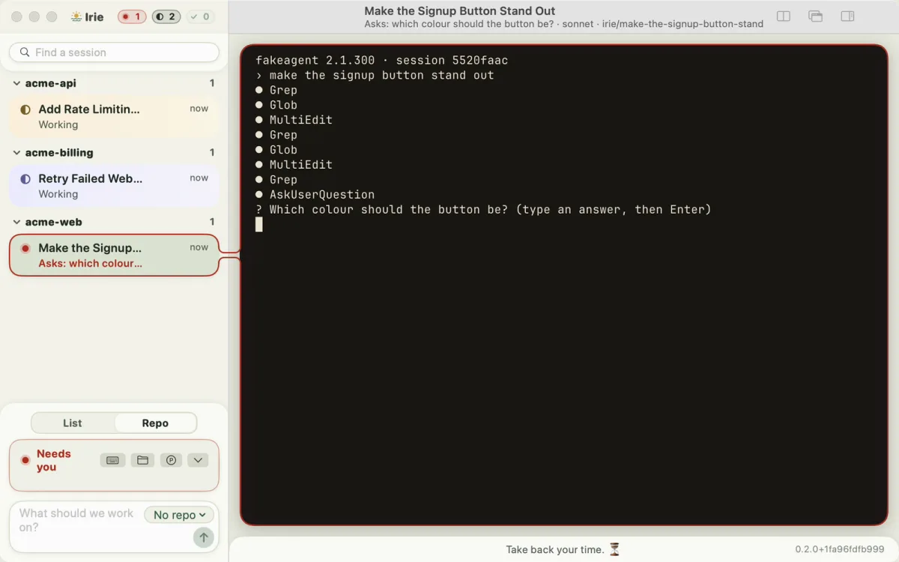

Open source · free · version 1.0
Irie
Every AI coding agent you have, side by side, in one calm view.
Irie runs coding agents from any supplier, on any model, in the cloud or on your own machine. Each one works on its own task in its own copy of your code, and one window shows what every agent is doing and which one needs you. It is what our own agents run in.
Free under the Apache-2.0 license. For Mac and Linux. No account, no server, no telemetry.

Who it’s for
Anyone who works with AI coding agents
Whether you run one agent or a dozen, on Claude or on a model on your own laptop.
- Developers Hand the grind to agents working in parallel, and spend your hours on the parts only you can do.
- Teams at work It runs on each person’s own machine with the AI provider you already use. Nothing goes to a server of ours: there isn’t one.
- Small firms like ours Several jobs moving at once, each in its own lane, with a person checking every result.
How it works
Type a task, watch the cards, answer when asked
-
Type a task
Say what you want done. Irie starts an agent on it in its own git worktree, so agents never trip over each other’s changes.
-
Watch the cards
Every agent gets a card: working, done, or red when it has a question. Answer it, and the agent goes back to work.
-
Use the right model
A fast local model for the small jobs, a strong cloud model for the hard ones, and a second opinion from another supplier before anything reaches you.
-
Come back to it
Close the window and the agents keep working. Every session’s context is kept in git, so any of it can be picked up again.
Why people use it
More done, less spent, nothing hidden
-
Take back your time
Agents work side by side, each on its own task. You review, decide, and do the parts only you can do.
-
Any agent, any supplier
Claude Code, or any other agent that runs in a terminal. If a supplier raises prices or goes away, swap it out.
-
Less spent per task
Each task goes to the cheapest model accurate enough for it, and a model on your own machine costs nothing per token.
-
Nothing sent on its own
No server, no account, no telemetry. Your agents talk to their own providers, as they would without Irie, and its records stay in folders only you can open.
-
One calm view
A sidebar of cards in place of a wall of terminals. Red means an agent needs you; everything else can wait.
-
Free, and yours to change
Open source under Apache-2.0 and built from public documentation. Read every line, and change what you like.
Get started
One line to install
Paste it into a terminal on a Mac or Linux. It downloads the latest release, checks it, and installs irie, and Irie.app on a Mac. Then irie setup checks what else Irie needs and asks before it installs anything.
Install guide Your first session What Irie is, part by part Roadmap
curl -fsSL https://irie-people.github.io/irie/install.sh | shWhere it stands
Version 1.0, and our daily driver
Out now
Version 1.0, released on 9 November 2026: the irie program for Mac and Linux, and Irie.app for Mac.
How we use it
Every job at CLI ’n’ Amen co. runs in Irie. Agents do the first pass, and the founder checks every result before you see it.
Not a developer?
Irie is why our work takes days, not weeks. Book a free Quick Check and we’ll put it to work on a chore of yours.
More from CLI ’n’ Amen co.
-
In development
Canopy
One checkout on a vendor’s phone for every way a customer pays, and one ledger at closing. For market stalls and food trucks.
-
In early development
A social media tool
Plan, draft and post to every channel from one place, and nothing goes out until you say yes.
Run your first agents today.
Irie is free. Install it in one line, or read what it is, part by part, first.